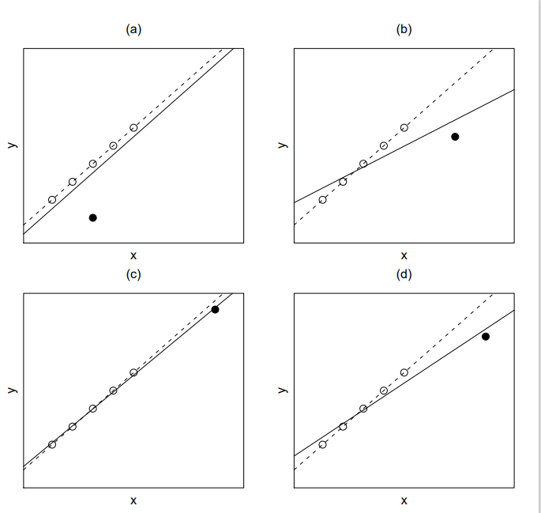

5 관측값에 대한 진단
5.1 서론
회귀분석을 포함한 통계적 자료분석에서 흔하게 접하는 문제는 자료 중의 일부가 통계적 모형에 의해 추정된 평균적인 경향에서 매우 벗어나 있는 점을 발견하게 되는 경우이다.
이러한 경우 평균적인 경향에서 매우 벗어난 자료를 분석에서 제외시킬 것인지에 대한 논의도 필요할 수 있으며 이러한 자료들이 모형의 모수에 대한 추정에 어떤 영향을 미칠 것인자에 대한 검토도 필요할 수 있다.
평균적인 경향에서 매우 벗어난 자료를 흔히 이상점(outlier)라고 부른다. 회귀분석에서 이러한 이상점은 회귀계수 추정과 그에 따른 여러 가지 통계적 추론에 많은 영향을 미친다. 따라서 이상점들이 회귀분석의 계수 추정에 어떤 영향을 얼만큼 끼치는가에 대한 검토는 매우 중요하다.
5.2 이상점의 유형
일차원 자료에서는 평균적인 경향에서 매우 벗어난 자료의 식별이 단순하고 쉽다. 예를 들어 다음과 같이 일변량 자료 \(\pmb x\)만 고려하면 이상점이 어떤 점인지는 쉽게 찾을 수 있다.
\[ \pmb x^t = (1,2,3,4,5,10) \]
그러나 반응변수와 독립변수들을 고려해야 하는 회귀분석에서 이상점은 간단하게 파악하기 힘들고 상황에 따라 그 의미가 매우 다르다.
회귀분석에서 이상점의 다양한 종류와 그 영향을 알아보기 위하여 단순회귀분석을 고려하고 다음 그림을 보자.
위의 그림에서 실선은 검정색 점을 포함해서 적합한 회귀직선이고 점선은 검정색 점을 제외했을 때의 회귀직선이다
그림의 (a)에서 검정색 점은 설명변수 \(x\)에 대해서는 이상점이 아니지만 \(x\)가 주어진 경우 반응변수 \(y\)에 대해서는 평균적인 경향에서 많이 벗어나 있기 때문에 이상점이다. 이러한 이상점을 회귀이상점(regression outlier)라고 부르기도 한다. (a)의 회귀이상점의 유무는 회귀계수의 추정에 크게 영향을 주지 않는다. 이렇게 어떤 관측점이 있고 없음에 따라 회귀계수의 값이 크게 변하지 않는다면 그 자료의 영향력(leverage)이 작다고 한다.
(b)에서의 검은 점은 설명변수 \(x\)에 대하여 이상점이며 또한 회귀이상점이다. 더 나아가 이 이상점을 제외하고 적합한 회귀계수는 이상점을 포함했을 때 적합한 회귀계수와 매우 다르다. 이 경우 이 이상점은 큰 영향력을 가졌다고 말한다.
(c)에서의 검은 점은 설명변수 \(x\)에 대해서 이상점이지만 회귀이상점은 아니다. 이러한 경우 이상점의 유무에 따라 회귀계수의 값이 크게 변하지 않으므로 이상점은 작은 영향력을 가졌다고 말한다. 하지만 (c)에서의 검은 점이 설명변수 \(x\)의 중심점으로부터 크게 멀어져있으므로 \(y\)의 값이 조그만 변해도 그림 (d)와 같이 큰 영향력을 가진다.
관측치 \(y_i\) 를 제외할 때와 포함할 때의 회귀계수 추정치가 매우 다르면 그 관측치를 영향점(influential point)라고 하며 그 영향의 크기는 그 점이 가진 영향력(leverage)의 크기와 평균에서 떨어진 정도에 비례한다.
자료가 선형모형의 계수 추정에 미치는 영향 \(\propto\) 영향력의 크기 \(\times\) 이상치의 특이한 정도
위에서 살펴보았듯이 회귀분석에서 이상점의 종류와 그 영향은 매우 다양하며 복잡하다. 이러한 이상점의 종류와 회귀계수의 영향에 대하여 분석할 때 유용하게 쓰이는 통계량이 잔차(residual)이다.
5.3 지렛값
\(y\)가 반응변수이고 \(p-1\)개의 설명변수 \(x_1,x_2,\dots,x_{p-1}\)가 있을 때 회귀식은 다음과 같이 표현된다.
\[ \pmb y = \pmb X \pmb \beta + \pmb e \]
회귀계수 \(\pmb \beta\)의 최소제곱 추정치 \(\hat{ \pmb \beta}\)는 다음과 같이 주어지며
\[ \hat{ \pmb \beta} = (\pmb X^t \pmb X)^{-1} \pmb X^t \pmb y \]
관측값 \(\pmb y\) 의 추정치 \(\hat {\pmb y}\)는 다음과 같다.
\[ \hat {\pmb y} = \pmb X \hat{ \pmb \beta} = \pmb X (\pmb X^t \pmb X)^{-1} \pmb X^t \pmb y \equiv \pmb H \pmb y \]
여기서 \(\pmb H= \pmb X (\pmb X^t \pmb X)^{-1} \pmb X^t\)를 사영행렬(hat matrix 또는 projection matrix)라고 부르며 사영행렬 \(\pmb H\) 의 \(i\) 번째 대각원소를 \(h_{ii}\)라고 하며 이는 이상치 또는 영향치 분석에 중요한 역할을 한다.
\(i\)번째 관측치의 설명변수 벡터를 다음과 같이 표시하면
\[\pmb x_{i}^t=(1, x_{i1},x_{i2},\dots, x_{i,p-1}) \]
\(\pmb H\) 의 \(i\) 번째 대각원소를 \(h_{ii}\)는 다음과 같이 표현된다.
\[ h_{ii} = \pmb x_{i}^t (\pmb X^t \pmb X)^{-1} \pmb x_{i} \tag{5.1}\]
\(h_{ii}\)는 \(i\) 번째 관측치의 설명변수 \((x_{i1},x_{i2},\dots, x_{i,p-1})\) 들이 모든 관측치의 평균 \((\bar x_1, \bar x_2,\dots, \bar x_{p-1})\) 에서 얼마나 멀리 떨어져 있는가에 대한 상대적인 양을 나타낸다. 따라서 \(h_{ii}\) 를 지렛점(leverage point)라고 부른다.
지렛점 값이 클수로 영향점일 가능성이 크며 큰 값을 높은 지렛값(high leverage point)라고 부른다.
보통 \(h_{ii}\)값이 \(p/n\)보다 크면 영향력이 크다고 말한다. 참고로 단순 회귀식에서 \(h_{ii}\)는 다음과 같이 주어진다.
\[ h_{ii} = \frac{1}{n} + \frac{ ( x_i-\bar x)^2 }{\sum (x_i-\bar x)^2} \]
또한 \(h_{ii}\)값을 모두 더하면 설명변수의 개수와 같다. \[ tr(\pmb H)=\sum_{i=1}^k h_{ii} = p \]
5.4 내 표준화 잔차
잔차 \(r_i\)는 \(y\) 의 실제 관측값과 그 추정치의 차이이며
\[ r_i = y_i -\hat y_i = y_i - {\pmb x}_i^t \hat {\pmb \beta} \tag{5.2}\]
잔차벡터에 대한 식은 다음과 같다.
\[ \pmb r = \pmb y - \hat {\pmb y} = \pmb y - \pmb H \pmb y = (\pmb I-\pmb H)\pmb y \tag{5.3}\]
잔차의 공분산 행렬을 살펴보면 다음과 같이 주어진다. 따라서 \(i\) 번째 잔차의 분산은 \(Var(r_i) = (1-h_{ii})\sigma^2\) 이다.
\[ Var(\pmb r) = \sigma^2 (\pmb I-\pmb H) \tag{5.4}\]
위에서 언급한 잔차 \(r_i\) 를 보통 잔차(ordinary residual)이라고 하며 그 크기가 단위에 따라 바뀌므로 잔차분석에서는 표준화 잔차(standardized residual)을 더 많이 사용한다.
아래와 같이 잔차를 그 표준편차로 나눈 값을 내 표준화 잔차(internally studentized residual) 이라고 부른다.
\[ r^s_i = \frac{r_i}{s \sqrt{1-h_{ii}}} \tag{5.5}\]
위의 식에서 \(s\)는 오차항의 표준편차 \(\sigma\)의 추정량이며 \(h_{ii}\)는 사영행렬 \(\pmb H\) 의 \(i\) 번째 대각원소(즉 지렛값)이다.
잔차분석에서는 척도(scale)에 영향이 없는 표준화 잔차를 이용하는 것이 좋다. 그 값이 클수로 이상치일 가능성이 크다. 보통 내표준화 잔차의 절대값이 2보다 크면 이상치일 가능성이 크다.
5.5 관측값의 영향: 계수 추정
회귀분석에서 하나의 관측치가 회귀계수의 추정에 영향을 미치는 정도를 알아볼 때 유용한 방법은 그 관측치를 제외했을 때의 최소제곱추정량과 포함했을 때의 추정량을 비교하는 것이다.
\(i\)번째 관측치에 대한 반응값과 설명변수들이 다음과 같은 때
\[ y_i, \quad \pmb x_{i}^t=(1, x_{i1},x_{i2},\dots, x_{i,p-1}) \]
\(i\)번째 관측치를 제외한 자료에서 반응변수와 설명변수의 벡터식을 다음과 같이 표시한다.
\[ \pmb y_{-i}, \quad \pmb X_{-i} \]
\(i\)번째 관측치를 제외했을 때 회귀계수의 최소제곱추정량을 \(\hat{ \pmb \beta}_{-i}\)라 하면 모든 관측치를 이용한 최소제곱추정량을 \(\hat{ \pmb \beta}\)와의 관계는 다음과 같이 나타낼 수 있다. 아래 식 세번째 중의 결과는 우드베리 공식 식 A.3 을 이용하였다.
\[ \begin{aligned} \hat{ \pmb \beta}_{-i} & = (\pmb X_{-i}^t \pmb X_{-i})^{-1} \pmb X_{-i}^t \pmb y_{-i}\\ & = (\pmb X^t \pmb X - \pmb x_{i} \pmb x_{i}^t)^{-1} (\pmb X^t \pmb y - \pmb x_{i} y_{i}) \\ & = \left [ (\pmb X^t \pmb X)^{-1} - \frac { (\pmb X^t \pmb X)^{-1} \pmb x_{i} \pmb x_{i}^t (\pmb X^t \pmb X)^{-1} }{ 1- \pmb x_{i}^t (\pmb X^t \pmb X)^{-1} \pmb x_{i} } \right ] (\pmb X^t \pmb y - \pmb x_{i} y_{i}) \\ & = \hat{ \pmb \beta} + \frac{1}{1-h_{ii}} (\pmb X^t \pmb X)^{-1} \pmb x_i \left [ \pmb x_i^t \hat{ \pmb \beta} - (1-h_{ii}) y_i - h_{ii} y_i \right ] \\ & = \hat{ \pmb \beta} - \frac{1}{1-h_{ii}} (\pmb X^t \pmb X)^{-1} \pmb x_i ( y_i - \pmb x_i^t \hat{ \pmb \beta}) \\ & = \hat{ \pmb \beta} - \frac{r_i}{1-h_{ii}} (\pmb X^t \pmb X)^{-1} \pmb x_i \end{aligned} \tag{5.6}\]
또한 \(i\)번째 관측치를 제외했을 때 오차항 분산의 추정량을 \(s^2_{-i}\)로 나타낸다.
\[ s^2_{-i} = \frac{1}{n-p-1} \sum_{j \ne i} (y_j - {\pmb x}_j^t \hat{ \pmb \beta}_{-i} )^2 \tag{5.7}\]
5.6 외 표준화 잔차와 PRESS 잔차
잔차를 표준화 할 떄 \(i\)번째 관측치를 제외했을 때 분산의 추정량을 \(s^2_{-i}\)을 이용하는 것이 합리적이다. 이는 반응값이 이상점인 경우 분산의 추정량이 커지게 된다. 식 식 5.5 에서 정의된 내 표준화 잔차에서는 이상점이 분산의 추정량에 영향을 주어 잔차의 크기가 작아지게 된다. 따라서 내 표본화 잔차는 이상점을 구별할 수 있는 능력이 떨어진다. 이러한 점을 보완하기 위하여 이상점의 영향을 약화시킬 수 있도록 \(s^2_{-i}\)를 이용하여 표준화 한 양이 아래와 같이 정의된 표준화 잔차이다.
\[ r^*_i = \frac{r_i}{s_{-i} \sqrt{1-h_{ii}}} \tag{5.8}\]
식 식 5.8 에서 정의된 차를 표준화 잔차(studentized residual) 또는 외 표준화 잔차(externally studentized residual)라고 부른다.
외 표준화 잔차는 \(i\)번째 관측치가 회귀식 적합에 미치는 영향을 내 표분화 잔차보다 더 민감하게 탐색할 수 있다. 보통 외 표준화 잔차의 절대값이 2보다 크면 이상치일 가능성이 크다.
PRESS 잔차 \(r_{i,-i}\)는 \(i\) 번쨰 관측값을 빼고 적합한 회귀식으로 부터 얻은 \(E(y| \pmb x_i)\)의 추정치 \(\hat y_{i,-i}\)를 이용하여 만든 잔차이다. PRESS 잔차는 다음과 같이 정의된다.
\[ r_{i,-i} = y_i - \hat y_{i,-i} = y_i - \pmb x^t_i \hat{ \pmb \beta}_{-i} \tag{5.9}\]
실제 PRESS 잔차를 구할 경우 관측값을 제외하지 않고도 원래의 회귀식을 이용하여 아래와 같이 쉽게 구할 수 있다. 그 값이 클수로 이상치 또는 영향점일 가능성이 크다.
\[ \begin{aligned} r_{i,-i} & = y_i - \hat y_{i,-i} \\ & =y_i - \pmb x^t_i \hat{ \pmb \beta}_{-i} \\ & = y_i - \pmb x^t_i \left [ \hat{ \pmb \beta} - \frac{1}{1-h_{ii}} (\pmb X^t \pmb X)^{-1} \pmb x_i r_i \right ] \\ &= (y_i - \pmb x^t_i \hat{ \pmb \beta}) + r_i \frac{\pmb x^t_i (\pmb X^t \pmb X)^{-1} \pmb x_i}{1-h_{ii}} \\ &= \frac{r_i}{1-h_{ii}} \end{aligned} \tag{5.10}\]
5.7 관측값의 영향: 분산 추정
참고로 식 식 5.7 에서 정의된 \(s^2_{-i}\) 과 \(s^2 = SSE/(n-p)\)의 관계를 살펴보자. 먼저 \(SSE\)의 정의와 식 식 5.6 과 식 5.10 를 이용하여 다음과 같은 분해가 가능하다.
\[ \pmb y - {\pmb X} \hat{ \pmb \beta}_{-i} = ( \pmb y - {\pmb X} \hat{ \pmb \beta}) + \frac{r_i}{1-h_{ii}} \pmb X (\pmb X^t \pmb X)^{-1} \pmb x_i \]
따라서
\[ \begin{aligned} & \sum_{j \ne i} (y_j - {\pmb x}_j^t \hat{ \pmb \beta}_{-i} )^2 + (y_i - \hat {y}_{i,-i} )^2 \\ & = \sum_{j \ne i} (y_j - {\pmb x}_j^t \hat{ \pmb \beta}_{-i} )^2 + (y_i - {\pmb x}_i^t \hat{ \pmb \beta}_{-i} )^2 \\ & = ( \pmb y - \pmb X \hat {\pmb \beta}_{-i})^t ( \pmb y - \pmb X \hat {\pmb \beta}_{-i}) \\ & = ( \pmb y - \pmb X \hat {\pmb \beta})^t ( \pmb y - \pmb X \hat {\pmb \beta}) -2 \frac{r_i}{1-h_{ii}} ( \pmb y - \pmb X \hat {\pmb \beta})^t \pmb X (\pmb X^t \pmb X)^{-1} \pmb x_i \\ & \quad + \frac{r^2_i}{(1-h_{ii})^2} \pmb x_i^t (\pmb X^t \pmb X)^{-1} \pmb X^t \pmb X (\pmb X^t \pmb X)^{-1} \pmb x_i \\ & = ( \pmb y - \pmb X \hat {\pmb \beta})^t ( \pmb y - \pmb X \hat {\pmb \beta}) -2 \frac{r_i}{1-h_{ii}} \pmb y^t(\pmb I - \pmb H) \pmb X (\pmb X^t \pmb X)^{-1} \pmb x_i \\ & \quad + \frac{r^2_i}{(1-h_{ii})^2} \pmb x_i^t (\pmb X^t \pmb X)^{-1} \pmb x_i \\ & = SSE + 0 + \frac{r^2_i}{(1-h_{ii})^2} h_{ii} \\ & = SSE + \frac{r^2_i h_{ii}}{(1-h_{ii})^2} \end{aligned} \tag{5.11}\]
이제 위의 식의 결과와 식 식 5.10 를 이용하면 다음과 같은 결과를 얻는다.
\[ \begin{aligned} \sum_{j \ne i} (y_j - {\pmb x}_j^t \hat{ \pmb \beta}_{-i} )^2 & = SSE + \frac{r^2_i h_{ii}}{(1-h_{ii})^2} - (y_i - \hat {y}_{i,-i} )^2 \\ & = SSE + \frac{r^2_i h_{ii}}{(1-h_{ii})^2} - (y_i - \hat {y}_{i,-i} )^2 \\ & = SSE + \frac{r^2_i h_{ii}}{(1-h_{ii})^2} - \frac{r^2_i}{(1-h_{ii})^2} \\ & = SSE - \frac{r^2_i }{1-h_{ii}} \end{aligned} \tag{5.12}\]
따라서 다음 식을 이용하면 \(s^2_{-i}\)은 모든 관측값을 이용한 \(s^2\)으로부터 쉽게 유도할 수 있다.
\[ (n-p-1) s^2_{-i} = (n-p)s^2 + - \frac{r^2_i }{1-h_{ii}} \tag{5.13}\]
5.8 영향력의 측도
하나의 관측값이 있는 경우 회귀계수 추정치와 없는 경우의 추정치의 차이가 크면 그 관측값이 큰 영향력을 가진다. 이러한 영향력을 측정할 수 있는 측조에 대하여 알아보자.
쿡의 거리(COOK’s distance) \(C_i\)는 \(i\)번째 관측치가 회귀식 적합의 계수에 미치는 영향을 나타내는 양으로서 다음과 같이 정의된다.
\[ C_i = \frac{ (\hat{ \pmb \beta} -\hat{ \pmb \beta}_{-i})^t [ \widehat {Cov}(\hat {\pmb \beta}]^{-1} (\hat{ \pmb \beta} -\hat{ \pmb \beta}_{-i}) } {p} = \frac{ (\hat{ \pmb \beta} -\hat{ \pmb \beta}_{-i})^t (\pmb X^t \pmb X) (\hat{ \pmb \beta} -\hat{ \pmb \beta}_{-i}) } {p s^2} \tag{5.14}\]
여기서 \(\hat{ \pmb \beta}_{-i}\)는 \(i\)번째 관측치를 제외하고 적합한 회귀식에 의한 회귀계수이며 \(p\)는 설명변수의 개수이다. 그 값이 클수로 영향점일 가능성이 크다.
쿡의 거리 \(C_i\)과 내 표준화 잔차와의 관계는 다음과 같다.
\[ C_i = \frac{ (r^s_i)^2}{p} \left ( \frac{h_{ii} }{1-h_{ii}} \right ) \]
DFFITS는 \(n\)개의 모든 자료를 이용했을 때의 \(i\) 번째 관측값의 평균 \(E(y|\pmb x_i)\)의 추정치 \(\hat y_i\)와 \(i\) 번쨰 관측값을 빼고 적합한 회귀식에 의한 추정치 \(\hat y_{i,-i}\)의 표준화된 차이을 말한다.
즉, \(\hat y_{i,-i}\)를 \(i\)번째 관측치를 제외하고 적합한 회귀식에 의한 예측치라고 한다면 두 예측치의 차이 \(\hat y_i - \hat y_{i,-i}\)를 표준화시키면 다음과 같다.
\[ DFFITS_i = \frac{\hat y_i - \hat y_{i,-i}}{s_{-i}\sqrt{h_{ii}}} \tag{5.15}\]
DFFITS 는 그 값이 클수로 영향점일 가능성이 크다.
여기서 식 식 5.6 를 이용하면 다음 식를 얻고
\[ {\pmb x}_i^t \hat{ \pmb \beta}_{-i} =\pmb x_i^t \hat{ \pmb \beta} -\frac{r_i h_{ii}}{1-h_{ii}}\]
DFFITS과 잔차와의 관계를 알 수 있다.
\[ \begin{aligned} DFFITS_i & = \frac{\hat y_i - \hat y_{i,-i}}{s_{-i}\sqrt{h_{ii}}} \\ & = \frac{ [h_{ii}/(1-h_{ii})]r_i } {s_{-i}\sqrt{h_{ii}}} \\ & = \frac{ r_i } {s_{-i}\sqrt{1-h_{ii}}} [h_{ii}/(1-h_{ii})]^{1/2} \\ &= r^*_i \left [\frac{h_{ii}}{1-h_{ii}} \right ]^{1/2} \end{aligned} \]